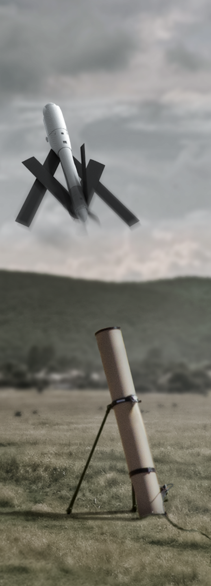

| F-22 Raptor |
Истребитель превосходства в воздухе |
Пулемет 20 мм, управляемые ракеты AIM-9, AIM-120 |
Истребитель с возможностью маневрирования на сверхзвуковых скоростях, обладает технологией малозаметности. |
 |
| F-15E Strike Eagle |
Истребитель-бомбардировщик |
Пулемет 20 мм, управляемые ракеты и бомбы |
Многоцелевой самолет для воздушных боев и нанесения точных ударов по наземным целям. |
 |
| F-16 Fighting Falcon |
Многоцелевой истребитель |
Пулемет 20 мм, ракеты AIM-9, бомбы |
Используется для борьбы с авиацией и нанесения ударов по наземным целям. |
 |
| F-35A Lightning II |
Стелс-истребитель пятого поколения |
Пулемет 25 мм, управляемые ракеты, бомбы |
Многоцелевой истребитель с технологией малозаметности для воздушных и ударных миссий. |
 |
| A-10 Thunderbolt II |
Штурмовик |
30-мм пушка GAU-8, ракеты Maverick, бомбы |
Самолет для непосредственной поддержки войск, имеет высокую защиту и маневренность. |
 |
| B-2 Spirit |
Стелс-бомбардировщик |
Бомбы B83, B61, управляемые JDAM |
Бомбардировщик со стелс-технологией для ударов по стратегическим целям в защищенных зонах противника. |
 |
| B-1B Lancer |
Сверхзвуковой стратегический бомбардировщик |
Бомбы свободного падения и управляемые JDAM |
Бомбардировщик для нанесения высокоточных ударов, может выполнять задачи на сверхзвуковых высотах. |
 |
| B-52 Stratofortress |
Стратегический бомбардировщик |
Управляемые и неуправляемые бомбы, крылатые ракеты |
Используется с 1950-х годов, способен нести различные типы оружия, включая атомные бомбы и крылатые ракеты. |
 |
| C-5M Super Galaxy |
Стратегический транспортный самолет |
Не вооружен |
Самый большой транспортный самолет армии США, грузоподъемность: до 127 тонн. |
 |
| C-17 Globemaster III |
Стратегический военно-транспортный самолет |
Не вооружен |
Основной самолет для перевозки тяжелых грузов на большие расстояния. Грузоподъемность: до 77,5 тонн. |
 |
| C-130 Hercules |
Транспортный самолет средней дальности |
Не вооружен |
Многоцелевой самолет для перевозки грузов и войск, применяется также для медицинской эвакуации. Грузоподъемность: до 20 тонн. |
 |
| KC-135 Stratotanker |
Самолет-заправщик |
Не вооружен |
Используется для дозаправки самолетов в воздухе, увеличивая дальность полета и время пребывания в воздухе. |
 |
| E-3 Sentry (AWACS) |
Самолет дальнего радиолокационного обнаружения и управления |
Не вооружен |
Обеспечивает радиолокационное наблюдение и управление воздушными операциями. |
 |
| E-8 Joint STARS |
Самолет разведки и управления |
Не вооружен |
Используется для разведки и управления наземными операциями, отслеживает цели на больших расстояниях. |
 |
| AC-130J Ghostrider |
Летающая батарея для огневой поддержки |
30-мм пушка, ракеты AGM-176 Griffin, управляемые бомбы |
Мощная платформа для огневой поддержки наземных операций, используется для уничтожения целей с воздуха. |
 |
| MC-130J Commando II |
Самолет для специальных операций |
Не вооружен |
Применяется для доставки бойцов специальных операций, их снабжения и эвакуации. |
 |
| AH-64 Apache |
Ударный вертолет |
30-мм пушка, ПТРК Hellfire, неуправляемые ракеты Hydra |
Основной ударный вертолет армии США, обладает высокой огневой мощью и маневренностью. Максимальная скорость: 293 км/ч. |
 |
| UH-60 Black Hawk |
Многоцелевой вертолет |
Пулеметы 7.62 мм или 12.7 мм |
Многоцелевой вертолет для транспортировки войск, эвакуации раненых и огневой поддержки. Максимальная скорость: 294 км/ч. |
 |
| CH-47 Chinook |
Транспортный вертолет |
Пулеметы 7.62 мм или 12.7 мм |
Тяжелый транспортный вертолет с возможностью перевозки грузов, техники и войск. Максимальная скорость: 315 км/ч. |
 |
| MH-6 Little Bird |
Легкий вертолет для специальных операций |
Пулеметы и ракеты |
Используется для быстрой доставки бойцов и разведки. Максимальная скорость: 282 км/ч. |
 |
| MQ-1C Gray Eagle |
Ударный и разведывательный БПЛА |
Ракеты Hellfire, бомбы |
Модернизированный беспилотник, используется для выполнения разведывательных и ударных операций. |
 |
| MQ-9 Reaper |
Тяжелый ударный БПЛА |
Ракеты Hellfire, бомбы JDAM |
Один из основных ударных беспилотников армии США для высокоточных ударов и разведки. Продолжительность полета: до 27 часов. |
 |
| RQ-4 Global Hawk |
Высотный стратегический разведывательный БПЛА |
Не вооружен |
Используется для стратегической разведки на больших высотах, способен выполнять миссии до 30 часов. |
 |
| RQ-7 Shadow |
Тактический БПЛА |
Не вооружен |
Тактический дрон для разведки и наблюдения на уровне батальона. Продолжительность полета: до 9 часов. |
 |
| RQ-11 Raven |
Легкий разведывательный БПЛА |
Не вооружен |
Используется для ближней разведки на поле боя. Продолжительность полета: до 90 минут. |
 |
| Switchblade |
Дрон-камикадзе |
Встроенная боевая часть |
Тактический дрон для точечного поражения легкобронированных целей. |
 |


.png)